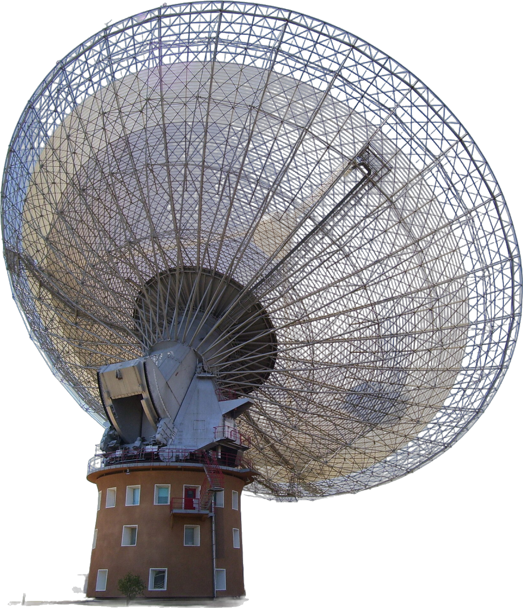
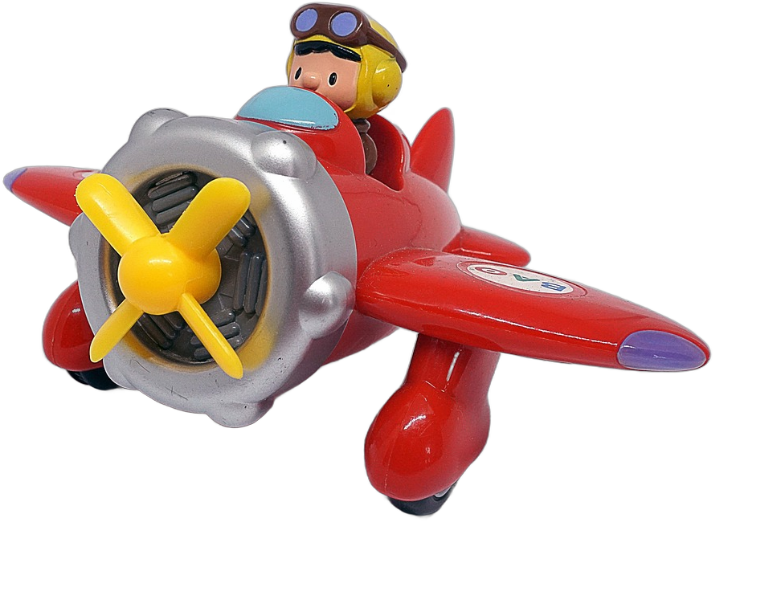
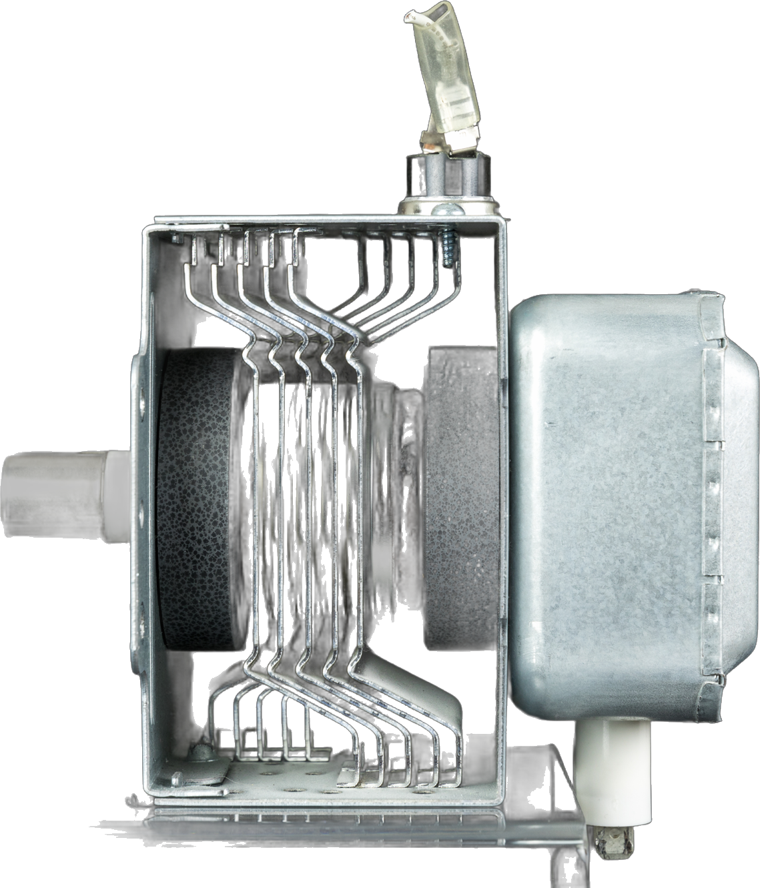
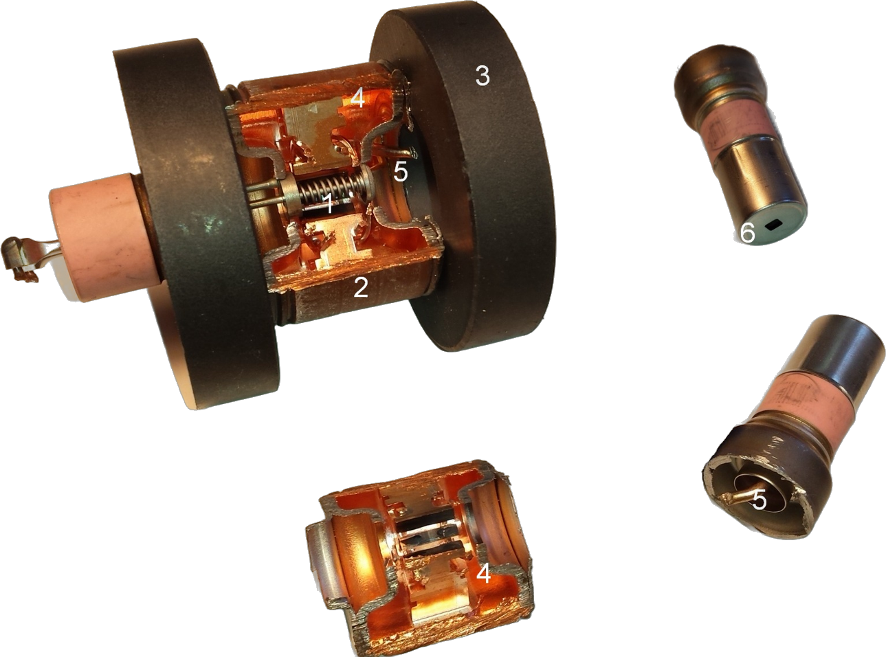

ПОДОЗРЕВАТЬ
ДОКАЗАТЬ

ДЕКАБРЬ 2014
на площадке поставили монитор радиопомех
ЯНВАРЬ 2015 · ОДНА НЕДЕЛЯ
ЯНВАРЬ 201519
ЯНВАРЬ 201522
ЯНВАРЬ 201523
три новых перитона
и три вспышки на 2,4 ГГц — в те же моменты
и три вспышки на 2,4 ГГц — в те же моменты

ПРАВИЛО: когда телескоп слушает 2,4 ГГц — микроволновки не включать!
ВЫКЛ
мешают наблюдениям — об этом знали давно
ЭКСПЕРИМЕНТ
«Young Man's Fancy», 1952 · Prelinger Archives
кухня сотрудников
 центр для посетителей
центр для посетителей
здание под телескопом
НЕСКОЛЬКО ПЕЧЕЙ

кружка воды
тарелка 64 м ↓
ФЕВРАЛЬ 201527
?
?
?
телескоп на профилактике · 1 перитон · какая печь?
МАРТ 201512
ПЕРИТОНОВ
0
ТЕЛЕСКОП: ДУГИ НЕТ
МАРТ 201517
ПРЕДЛОЖИЛ
Джон Рейнольдс
не ждать нуля — открыть дверцу!
кадр: «Young Man's Fancy», 1952

«мы попробовали остановить печь, открыв дверцу, — и бум»
Эмили Петрофф · The Conversation · 2015

рис. 5 · перитон от микроволновки · 17.03.2015

 письмо коллег
письмо коллегСИНГАПУР
«Я так и знала!»
Эмили Петрофф · по её словам (Nature Index)
аэропорт Чанги, Jewel · видео Pixabay


ПОЧЕМУ
ДВЕРЦА?
ДВЕРЦА?
магнетрон — сердце печи
фото: Raimond Spekking, Schrauber5 · CC BY-SA 4.0

фокальная кабина
1 · печь работает — волны внутри корпуса
2 · отключение — магнетрон «искрит»
3 · дверца открыта — всплеск наружу
≈50%
попыток дали дугу — для доказательства хватило
СЕМЕЙСТВО 1
СЕМЕЙСТВО 2
кухня сотрудников
центр для посетителей6
ЕЩЁ ОДНА СТРАННОСТЬ
ДВА СЕМЕЙСТВА = ДВЕ КУХНИ
B · НАУКА ИЗНУТРИ · 01